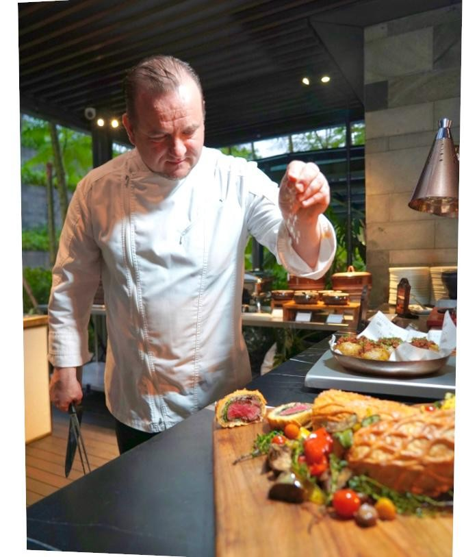

The Chef
About
German Executive Chef and F&B Division Leader with more than 20 years of global luxury hospitality experience across Europe, the Middle East, and Asia.
Biography
Marco Braun is a German Executive Chef and F&B Division Leader with over two decades of distinguished service at the world's most prestigious luxury hospitality brands. From his culinary apprenticeship at the 5-star Excelsior Hotel Ernst in Cologne — a Leading Hotels of the World member — to directing full-scale F&B operations across three continents, Marco brings a rare combination of classical European technique and global operational mastery.
His career spans iconic properties under brands including Hyatt, Kempinski, InterContinental, Marriott International, and renowned independent luxury hotels in Switzerland. He is equally at home in an intimate fine dining kitchen and commanding a mega-event operation for 15,000 guests, as demonstrated during his tenure at Jakarta Convention Center — Indonesia's premier MICE destination.
Marco's culinary philosophy is rooted in restraint and precision: fewer ingredients, higher quality, and cooking methods that allow the produce to speak for itself. This clarity of vision has defined his approach across every role, every country, and every kitchen he has led.
An accomplished leader and mentor, Marco has coached national culinary teams to gold medals, served as judge at Salon Culinaire Asia, and implemented ISO 22000 food safety certification at the Grand Hyatt Bali. He was also a member of the Gastronomy Team at the World Economic Forum in Davos in 2022.
Currently based in Central Java, Indonesia, Marco serves as Executive Chef at the Padma Hotel — an upscale 5-star resort where he directs all culinary operations including Cantonese fine dining, all-day dining, patisserie, and large-scale events, including the ASEAN Economic Meeting (AEM55) serving up to 6,000 guests daily.
Core Competencies
Brand Experience
